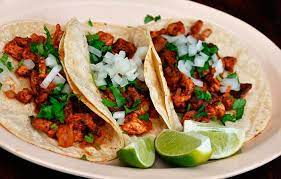

Receta para tacos de pastor

Ingredientes
- 1 kg pierna fileteada de cerdo
- 500 ml adobo
- 1 pina
- 1 kg tortilla
Instrucciones
- Cortar la pina en rodajas
- Adobar la carne mezclando con las manospor 5 minutos.
- Ensatrtar los filetes adobados en el trompo y cocinar por 30 minutos.
- Cortar las orillas de los filetesque que ya estan cocidas.
- Armar el taco
Back to index